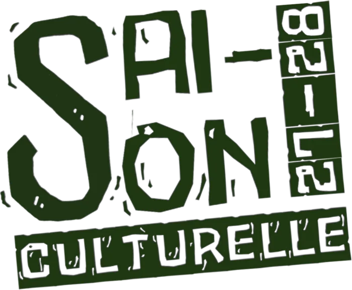
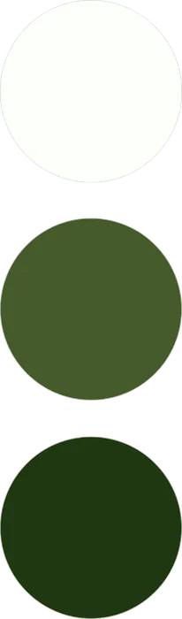
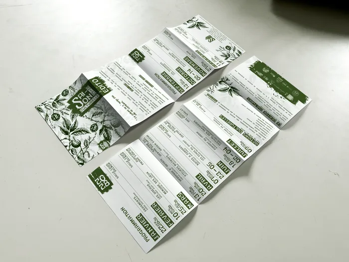

Nous imaginons des univers visuels singuliers pour les marques, les lieux et les événements. De la recherche créative à la conception graphique, nous construisons des identités cohérentes qui traduisent une personnalité, racontent une histoire et prennent vie sur différents supports.
Logo, typographie, couleurs, édition, textile ou communication événementielle : chaque élément participe à construire un langage visuel reconnaissable.
Une identité visuelle ne se limite pas à un logo. Elle se décline, s’adapte et s’exprime à travers une multitude de supports, selon les besoins et les usages de chaque projet.


Projet conceptuel · Saison culturelle
01
Identité & branding
Logo et logotype
Charte graphique
Typographies et couleurs
Univers graphique
Éléments visuels et iconographie

Projet conceptuel · Saison culturelle
02
Print & édition
Affiches et flyers
Brochures et dépliants
Menus et cartes
Catalogues et livrets
Papeterie et supports imprimés
Projet conceptuel · Saison culturelle
03
Communication événementielle
Identité graphique d’événement
Affiches et programmation
Invitations et programmes
Signalétique
Supports de communication digitale
Projet conceptuel · Saison culturelle
04
Textile & merchandising
T-shirts et vêtements personnalisés
Tote bags et accessoires
Packaging et étiquettes
Objets promotionnels
Goodies et merchandising
Les formules
Des formules adaptées à chaque projet.
Que vous souhaitiez poser les premières bases de votre identité ou développer un univers graphique complet, nous proposons différents niveaux d’accompagnement. Chaque formule constitue un point de départ, adaptable selon vos besoins.
01 · Essentiel
Essentiel
Les bases
Pour poser les premières bases d’une identité visuelle cohérente.
Les tarifs sont indicatifs et peuvent évoluer selon la complexité du projet, le nombre de supports et les besoins de production. Chaque prestation fait l’objet d’un devis personnalisé.
La méthode
De l’idée à l’identité.
01
01
Échanger
Comprendre votre projet, votre histoire, vos valeurs et les personnes auxquelles vous vous adressez. Définir ensemble les besoins et les objectifs.
02
02
Imaginer
Explorer les références, les pistes créatives et les intentions graphiques. Définir une direction artistique cohérente avec votre univers.
03
03
Concevoir
Développer l’identité visuelle, réaliser les différents éléments graphiques et construire les premières déclinaisons.
04
04
Déployer
Finaliser les supports, préparer les fichiers et accompagner leur mise en application, du numérique à l’impression et au textile.
L’approche
Une approche nourrie par la matière.
Ma formation en DN MADE Matériaux, mention Textile, m’a apporté une approche particulière de la création visuelle.
Au-delà du graphisme, j’ai développé une sensibilité aux matières, aux textures, aux couleurs, aux procédés de fabrication et aux savoir-faire artisanaux.
Cette formation me permet d’aborder l’identité visuelle dans sa globalité : penser une image, mais aussi la manière dont elle prend forme et se matérialise sur différents supports.
Du papier au textile, de l’impression à l’objet, j’accorde une attention particulière aux détails, aux finitions et à la cohérence de chaque réalisation.
Vous avez une marque à lancer, un lieu à valoriser ou un événement à habiller visuellement ? Présentez-nous votre projet et imaginons ensemble son identité.